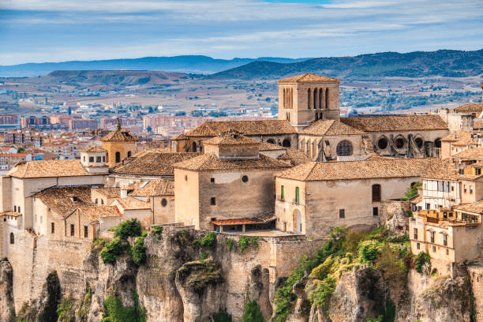
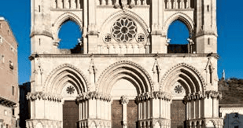

Merece la pena subir las cuestas y callejuelas que se adentran en esta ciudad -situada entre las hoces de los ríos Júcar y Huécar- para dejarse sorprender por sus miradores. Entre las paradas imprescindibles está la Plaza Mayor, donde verás los arcos del Ayuntamiento y la bonita Catedral que se comenzó a construir a finales del siglo XII.
Por detrás del templo, una calle lleva a las Casas Colgadas, el gran símbolo de Cuenca. Se conservan tres visitables: la Casa de la Sirena y las Casas del Rey, donde puedes conocer el Museo de Arte Abstracto Español, con obras de artistas tan famosos como Tápies, Chillida o Saura.
Cuenca también te va a sorprender por curiosidades como los “rascacielos” del barrio de San Martín o el túnel visitable de la calle Alfonso VIII. Los aficionados a los museos tienen otras opciones: la Fundación Antonio Saura, la Fundación Antonio Pérez, el Museo de las Ciencias… Y si quieres investigar en las tradiciones, también está el Museo de la Semana Santa, dedicado a la fiesta más famosa de la ciudad.

Catedral de Nuestra Señora de Gracia
La catedral es de estilo gótico con claras influencias francesas. El exterior ha perdido su carácter gótico debido a las innovaciones introducidas durante el Renacimiento.
Es de planta de cruz latina y tiene un ábside poligonal de siete lados. El triforio es un resto de la estructura normanda original. Es único en España y además, la decoración sirve para contrarrestar el empuje de las bóvedas.
La fachada principal tiene tres puertas de acceso. El altar mayor es de Ventura Rodríguez y además posee unas magníficas rejas del siglo XVI. Las puertas de las salas capitulares son obra de Berruguete.

Torre Mangana
Se trata de uno de los monumentos más significativos de la ciudad. Está situada en el solar de un antiguo alcázar árabe.
El acceso a la torre de 28 metros de altura por una puerta, situada en una de sus caras, algo elevada del suelo de la plaza. Sobre ella se aprecian cuatro ventanas alargadas y estrechas, llamadas saeteras y en la parte superior una más ancha enmarcada en sillería.
En la actualidad, este monumento marca la hora de la ciudad para los vecinos del casco Antiguo y es al mismo tiempo un mirador desde done podemos alcanzar a ver toda la ciudad de Cuenca.